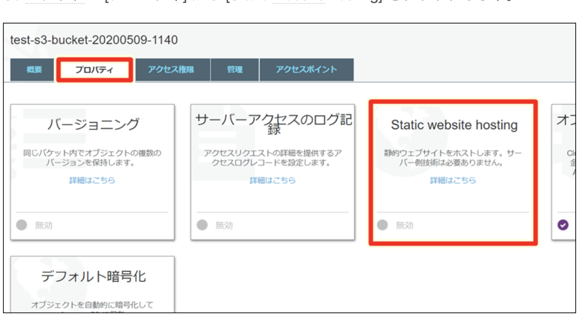
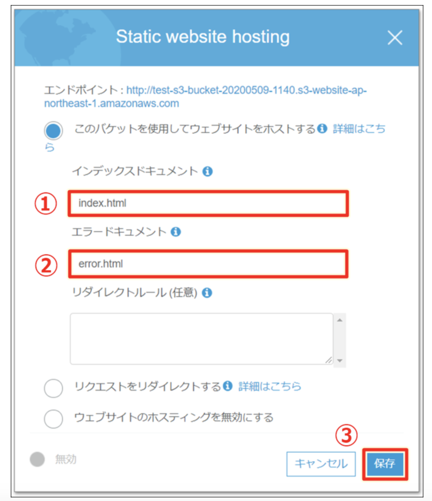
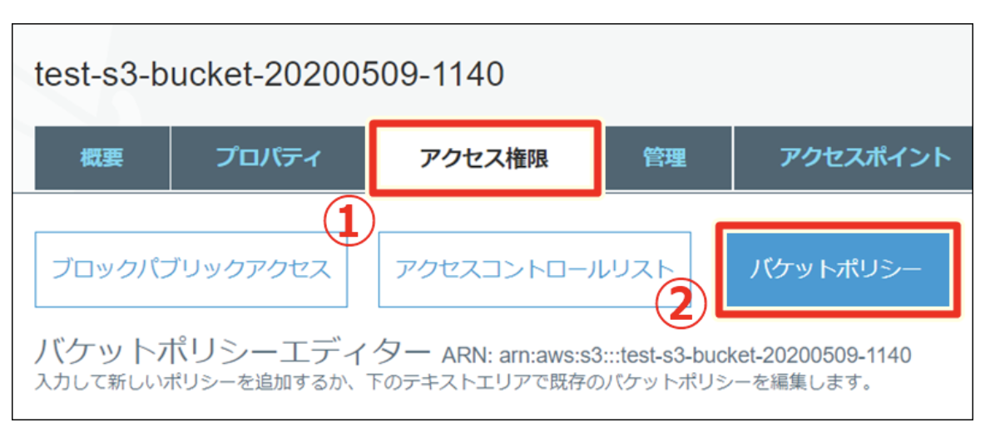

Create Test Environment By Nginx, EC2 and S3
用Nginx, EC2 和 S3来造一个测试环境
最近因为测试环境不够用, 所以试造了一个测试环境。
使用了Nginx, EC2 和 S3.
下面记录一下步骤:
EC2:
1.首先要有两个EC2的服务器, 一个用于存放cakephp源代码, 一个用于nginx设定的ngin反向代理服务器。
- test-web-redhat-test (用于存放cakephp源代码)
- test.kou (nginx反向代理服务器)
平时一般是启动两个EC2, 在test-web-redhat-test寻找到源代码路径,
git checkout branch & git pull 来进行代码获取。
连接多用ssh。
1 | ssh -i ~/.ssh/<your.pem> -oStrictHostKeyChecking=no ec2-user@<your redhat server public ip></your> |
Nginx
然后同样方式连接到test.kou (nginx反向代理服务器)。
找到nginx.conf, 在里面进行redirect设定。指向S3的bucket地址。
例:
server_settings/nginx_settings/nginx/conf/nginx.conf
1 | location /test/ { |
nginx.conf修改之后要重新启动服务器,sudo service nginx configtest进行测试没啥问题的话,
使用sudo service nginx restart来重启服务器。
这样当你连接
S3
新建一个bucket。并设置成能够公开静态页面的状态。在此取得proxy_pass
 有必要的话进行bucket policy设置来进行ip block.
1 | { |